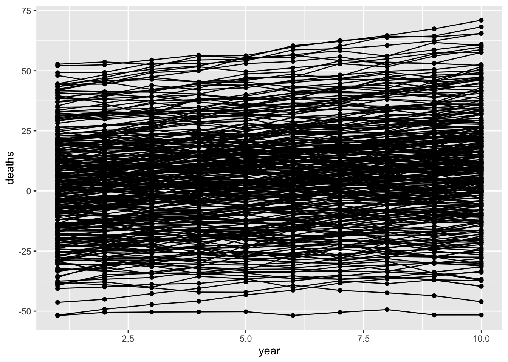
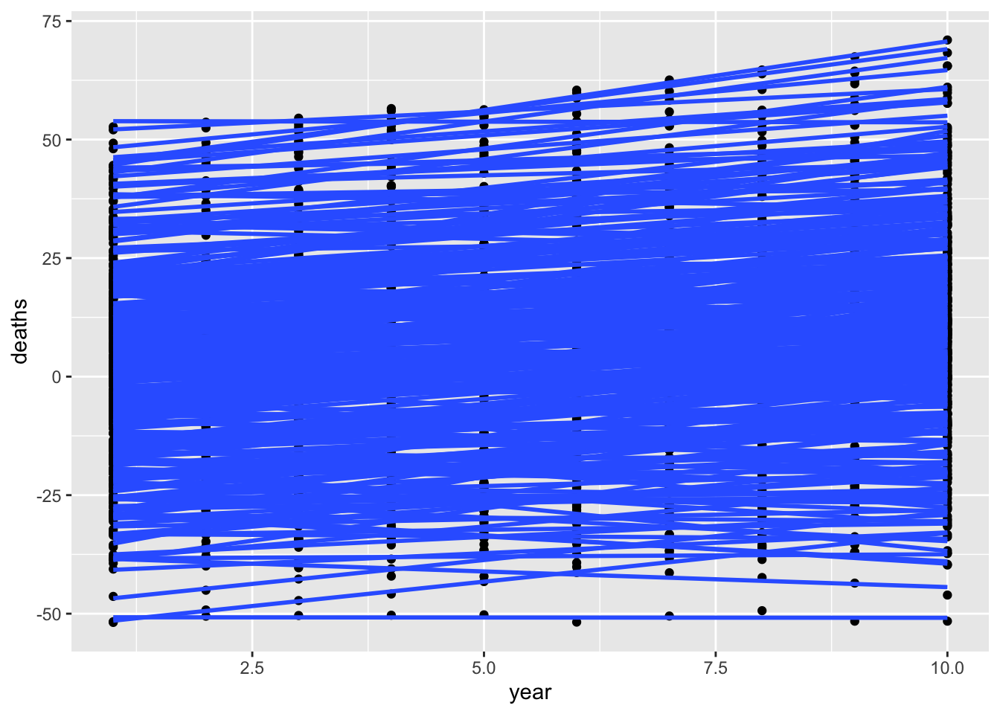
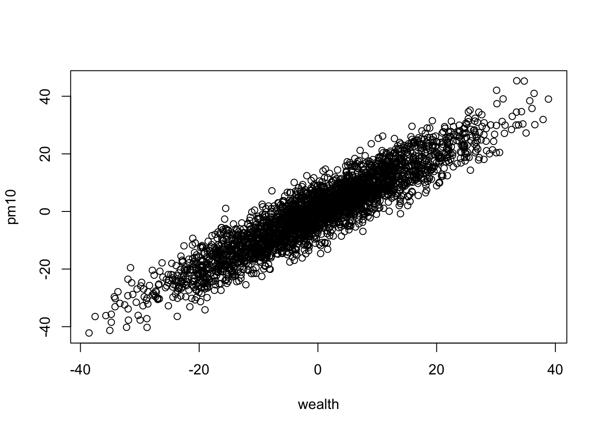

library(dplyr)
library(ggplot2)Motivated by discussion with Tim Cadman relating to this Renzi et al (2019). Long-Term PM10 Exposure and Cause-Specific Mortality in the Latium Region (Italy): A Difference-in-Differences Approach.
For argument’s sake suppose that air pollution (PM10) isn’t causal for deaths. Simulate a situation where wealth varies by region, and each region has a different wealth trajectory over time. Some info:
- Wealth, PM10 and deaths are measured for 10 years in 300 regions.
- Wealth causes PM10 and deaths.
- There is a global confounder for the start point of wealth and deaths
- Time has an additional effect on both deaths and wealth - i.e. it’s also a global confounder
- The causal effect of wealth on death = 1. We want our model to get that right.
nregion <- 300
region <- 1:300
wealth_int <- rnorm(nregion)
wealth_slope <- rnorm(nregion)
global_confounder <- rnorm(nregion, sd=10)
nyear <- 10
dat <- lapply(1:nregion, function(i)
{
tibble(
region=i,
year=1:nyear,
# wealth goes up due to global confounder, year, random error
wealth = global_confounder[i] + wealth_int[i] + year * wealth_slope[i] + rnorm(nyear),
# PM10 only related to wealth and random error
pm10 = wealth + rnorm(nyear, sd=5),
# deaths go up due to global confounders, wealth, year and random term
deaths = global_confounder[i] + wealth + rnorm(nyear) + year
)
}) %>%
bind_rows()dat# A tibble: 3,000 × 5
region year wealth pm10 deaths
<int> <int> <dbl> <dbl> <dbl>
1 1 1 2.25 2.28 5.18
2 1 2 1.81 0.393 5.79
3 1 3 2.25 4.05 9.20
4 1 4 2.89 12.0 11.6
5 1 5 4.02 7.55 12.7
6 1 6 3.15 3.08 12.7
7 1 7 1.67 1.51 11.3
8 1 8 2.83 4.92 13.4
9 1 9 5.08 8.42 16.2
10 1 10 4.96 10.1 18.4
# … with 2,990 more rowsPlot it showing change in deaths over time by region
ggplot(dat, aes(x=year, y=deaths)) +
geom_point(aes(group=as.factor(region))) +
geom_line(aes(group=as.factor(region)))
Try again but just regression lines per region
ggplot(dat, aes(x=year, y=deaths)) +
geom_point(aes(group=as.factor(region))) +
geom_smooth(method="lm", aes(group=as.factor(region)), se=FALSE)`geom_smooth()` using formula = 'y ~ x'
Show that PM10 is closely coupled with wealth
plot(pm10 ~ wealth, dat)
Use regression to test for influence of wealth on deaths - this gives a very confounded result because of the global confounder.
summary(lm(deaths ~ wealth, dat))
Call:
lm(formula = deaths ~ wealth, data = dat)
Residuals:
Min 1Q Median 3Q Max
-17.6518 -4.4416 -0.7553 3.7309 25.9024
Coefficients:
Estimate Std. Error t value Pr(>|t|)
(Intercept) 5.760562 0.115301 49.96 <2e-16 ***
wealth 1.715797 0.009365 183.21 <2e-16 ***
---
Signif. codes: 0 '***' 0.001 '**' 0.01 '*' 0.05 '.' 0.1 ' ' 1
Residual standard error: 6.315 on 2998 degrees of freedom
Multiple R-squared: 0.918, Adjusted R-squared: 0.918
F-statistic: 3.357e+04 on 1 and 2998 DF, p-value: < 2.2e-16Same will be true for PM10
summary(lm(deaths ~ pm10, dat))
Call:
lm(formula = deaths ~ pm10, data = dat)
Residuals:
Min 1Q Median 3Q Max
-33.668 -6.799 -0.196 6.836 38.319
Coefficients:
Estimate Std. Error t value Pr(>|t|)
(Intercept) 5.88951 0.18634 31.6 <2e-16 ***
pm10 1.46754 0.01399 104.9 <2e-16 ***
---
Signif. codes: 0 '***' 0.001 '**' 0.01 '*' 0.05 '.' 0.1 ' ' 1
Residual standard error: 10.21 on 2998 degrees of freedom
Multiple R-squared: 0.7858, Adjusted R-squared: 0.7857
F-statistic: 1.1e+04 on 1 and 2998 DF, p-value: < 2.2e-16So PM10 is confounded at two levels - the between-region (global) level and the within-region level.
Now do a DiD model for wealth - it should give us an unbiased estimate of 1. Note that this long form of DiD is sometimes called a fixed-effects model.
summary(lm(deaths ~ wealth + as.factor(region) + as.factor(year), dat)) %>%
coefficients %>% as_tibble %>% slice(n=2)# A tibble: 1 × 4
Estimate `Std. Error` `t value` `Pr(>|t|)`
<dbl> <dbl> <dbl> <dbl>
1 0.993 0.00590 168. 0It does. What about DiD model for PM10? This should be less confounded because it eliminates the global confounder, but still confounded by the structural confounding that happens at all areas
summary(lm(deaths ~ pm10 + as.factor(region) + as.factor(year), dat)) %>%
coefficients %>% as_tibble %>% slice(n=2)# A tibble: 1 × 4
Estimate `Std. Error` `t value` `Pr(>|t|)`
<dbl> <dbl> <dbl> <dbl>
1 0.293 0.00931 31.4 4.94e-185If we control for wealth, the effect of PM10 will be unbiased because the within-region bias has been removed, and the global bias acted via wealth anyway so that’s been removed also
summary(lm(deaths ~ pm10 + wealth, dat)) %>%
coefficients %>% as_tibble %>% slice(n=2)# A tibble: 1 × 4
Estimate `Std. Error` `t value` `Pr(>|t|)`
<dbl> <dbl> <dbl> <dbl>
1 -0.0224 0.0231 -0.969 0.333We could try to simplify by doing the more explicit difference in difference estimate. Compare the change in deaths with the change in wealth (or PM10) over the 10 year period.
dat2 <- group_by(dat, region) %>%
summarise(
delta_deaths = deaths[nyear] - deaths[1],
delta_wealth = wealth[nyear] - wealth[1],
delta_pm10 = pm10[nyear] - pm10[1]
)
dat2# A tibble: 300 × 4
region delta_deaths delta_wealth delta_pm10
<int> <dbl> <dbl> <dbl>
1 1 13.2 2.71 7.80
2 2 19.6 12.9 18.6
3 3 20.6 10.6 6.65
4 4 4.24 -3.10 -10.7
5 5 9.08 -0.285 -9.31
6 6 17.7 9.94 8.22
7 7 10.7 2.15 10.4
8 8 16.7 6.61 -3.01
9 9 6.55 -2.51 13.1
10 10 17.9 9.83 10.8
# … with 290 more rowsDo the DiD estimates using these - should recapitulate what we got above
summary(lm(delta_deaths ~ delta_wealth, dat2))
Call:
lm(formula = delta_deaths ~ delta_wealth, data = dat2)
Residuals:
Min 1Q Median 3Q Max
-5.6788 -0.9511 0.1077 1.0252 3.6020
Coefficients:
Estimate Std. Error t value Pr(>|t|)
(Intercept) 9.063688 0.082771 109.5 <2e-16 ***
delta_wealth 0.990565 0.008896 111.3 <2e-16 ***
---
Signif. codes: 0 '***' 0.001 '**' 0.01 '*' 0.05 '.' 0.1 ' ' 1
Residual standard error: 1.434 on 298 degrees of freedom
Multiple R-squared: 0.9765, Adjusted R-squared: 0.9764
F-statistic: 1.24e+04 on 1 and 298 DF, p-value: < 2.2e-16summary(lm(delta_deaths ~ delta_pm10, dat2))
Call:
lm(formula = delta_deaths ~ delta_pm10, data = dat2)
Residuals:
Min 1Q Median 3Q Max
-14.0715 -3.9080 -0.3154 3.7670 16.6385
Coefficients:
Estimate Std. Error t value Pr(>|t|)
(Intercept) 9.09954 0.33647 27.04 <2e-16 ***
delta_pm10 0.61677 0.02844 21.69 <2e-16 ***
---
Signif. codes: 0 '***' 0.001 '**' 0.01 '*' 0.05 '.' 0.1 ' ' 1
Residual standard error: 5.827 on 298 degrees of freedom
Multiple R-squared: 0.6122, Adjusted R-squared: 0.6109
F-statistic: 470.5 on 1 and 298 DF, p-value: < 2.2e-16Weirdly, it works for wealth but we do get a slightly difference answer for PM10. There is probably a lot of literature on what makes a fixed effects model (the first version of the DiD we did above) different from an explicit version like this one.
To summarise - the DiD model is useful to account for unmeasured global confounders (including time), but it might not be too surprising that it doesn’t control for all confounders - you really do need some sort of experiment / randomisation that specifically mimics the exact intervention you want to make to get to completely unconfounded effects.
sessionInfo()R version 4.2.1 Patched (2022-09-06 r82817)
Platform: aarch64-apple-darwin20 (64-bit)
Running under: macOS Monterey 12.6.2
Matrix products: default
BLAS: /Library/Frameworks/R.framework/Versions/4.2-arm64/Resources/lib/libRblas.0.dylib
LAPACK: /Library/Frameworks/R.framework/Versions/4.2-arm64/Resources/lib/libRlapack.dylib
locale:
[1] en_GB.UTF-8/en_GB.UTF-8/en_GB.UTF-8/C/en_GB.UTF-8/en_GB.UTF-8
attached base packages:
[1] stats graphics grDevices utils datasets methods base
other attached packages:
[1] ggplot2_3.4.0 dplyr_1.0.10
loaded via a namespace (and not attached):
[1] pillar_1.8.1 compiler_4.2.1 tools_4.2.1 digest_0.6.31
[5] lattice_0.20-45 nlme_3.1-158 jsonlite_1.8.4 evaluate_0.19
[9] lifecycle_1.0.3 tibble_3.1.8 gtable_0.3.1 mgcv_1.8-40
[13] pkgconfig_2.0.3 rlang_1.0.6 Matrix_1.4-1 DBI_1.1.3
[17] cli_3.5.0 yaml_2.3.6 xfun_0.36 fastmap_1.1.0
[21] withr_2.5.0 stringr_1.5.0 knitr_1.41 generics_0.1.3
[25] vctrs_0.5.1 htmlwidgets_1.5.4 grid_4.2.1 tidyselect_1.2.0
[29] glue_1.6.2 R6_2.5.1 fansi_1.0.3 rmarkdown_2.16
[33] farver_2.1.1 magrittr_2.0.3 scales_1.2.1 htmltools_0.5.4
[37] splines_4.2.1 assertthat_0.2.1 colorspace_2.0-3 labeling_0.4.2
[41] utf8_1.2.2 stringi_1.7.8 munsell_0.5.0